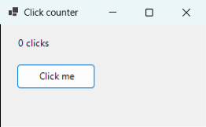

Getting started
Install the package, run your first .NET call from Ring, and learn the four startup modes.
New to Ring? The appendix has a Quick introduction to Ring (about 15 minutes); read it first if you have never written a Ring program.
Requirements#
| You need | Why |
|---|---|
| Ring 1.27 or newer | The language. The package is a normal Ring package. |
| .NET 6 or newer (tested with .NET 9) | The runtime that RingDotNet hosts inside the Ring process. |
| Windows Desktop runtime | Only for Windows Forms and WPF programs (it is part of the .NET Desktop runtime installer). |
| ASP.NET Core runtime | Only for web programs ("RingDotNet.Web"). |
The package is built and tested on Windows with Ring 1.28 and .NET 9. The C extension and the managed bridge are portable; the Windows Forms and WPF parts are Windows-only by nature.
Install#
Install the package with RingPM, the Ring package manager, in one step:
ringpm install ringdotnet from ringpackagesThat is all. The package is one zip file (extensions/ringdotnet.zip): RingPM copies it and its setup.ring extracts it into your Ring folder, which is much faster than installing thousands of files one by one. It brings the library, the extension (ring_dotnet.dll), the managed assemblies, the samples and the applications, so every program can start with:
load "dotnet.ring"You do not need to set a path or copy files. To test the installation, run a sample:
ring samples/UsingDotNet/introduction/test00_first.ringLinux and macOS#
The package works on Linux (tested on Ubuntu 24.04, x64, with .NET 9) and should work on macOS. The extension is a C library, so it is built once for your system; the managed files are the same on every system and are installed in ring/bin by the package.
cd ring/extensions/ringdotnet
sh buildgcc.sh # Linux (macOS: sh buildclang.sh); writes libring_dotnet.so to ring/libThe build needs the Ring headers and library (ring/language/include and ring/lib). Install the .NET runtime (not only the SDK) with the packages of your system or with the dotnet-install script, and for the web programs also the ASP.NET Core runtime. If dotnet is not in the usual place, set DOTNET_ROOT. The extension finds the managed files in ring/bin when they are not next to the library. Windows Forms and WPF programs need Windows; everything else (text, files, collections, JSON, XML, HTTP, sockets, tasks, databases with Entity Framework and SQLite, the web server) runs the same way.
Your first program#
# The first program: simple syntax, the namespaces are opened with using
load "dotnet.ring"
using {
"System"
"System.Text"
}
oSB = new StringBuilder("Hello")
oSB.Append(", ").Append("Ring!")
? oSB.ToString()
? oSB.Length
? new Math().Max(3,9)
? "Running on .NET " + new Environment().Version.ToString()Hello, Ring!
12
9
Running on .NET 9.0.15The using { } block opens the .NET namespaces, like using System; in C#. After it, every class of those namespaces is a Ring class with the same name: new StringBuilder("Hello"), oSB.Append(...), oSB.Length, new Math().Max(3,9). This is what you will use almost always.
For a type that has no generated class you can also make generic calls: dnType("System.Console").callMethod("WriteLine",["text"]), dnNew(...), dnStatic(...). See Core functions and the sample samples/UsingDotNet/introduction/test01_hello.ring.
The startup modes#
The first .NET call starts the runtime, and the runtime can be started in one mode only. You do not have to choose it: the using { } block looks at the names and starts the mode that the program needs.
| The block names... | Mode that is started | Use it for |
|---|---|---|
only System... namespaces | the base runtime | Console programs, files, networking, JSON, XML, reflection, LINQ |
System.Windows* or System.Drawing* | Windows Desktop runtime, Ring thread becomes STA (dnUseDesktop()) | Windows Forms, WPF |
Microsoft.AspNetCore* or "RingDotNet.Web" | ASP.NET Core runtime, loads the web server (dnUseWeb()) | WebServer (ASP.NET Core) |
| both of the two above | Desktop and ASP.NET Core together (dnUseAll()) | A GUI program that also serves HTTP |
Microsoft.EntityFrameworkCore* or "RingDotNet.Data" | loads the Entity Framework assemblies (dnUseData()) | RingDatabase, RingEntityDb (Entity Framework) |
load "dotnet.ring"
using {
"System.Drawing" # starts the desktop mode: Windows Forms or WPF
"System.Windows.Forms"
}"RingDotNet.Web" and "RingDotNet.Data" are not .NET namespaces: they name the helper classes of this package (WebServer; RingDatabase, RingEntityDb) so that you can ask for them in the same place.
Put the using block before any other .NET call. If the mode is already started and the block asks for another one, the program stops with a message that says so. The functions dnUseDesktop(), dnUseWeb(), dnUseAll() and dnUseData() still exist, and the block is only a shorter way to call them (Core functions).
Importing namespaces#
The wrapper classes are loaded on demand, one namespace at a time, so a program only pays for what it uses. Name the namespaces in a using block, like C#. Each item must be a text; anything else is an error:
using {
"System.IO" # File, Directory, Path, StreamReader ...
"System.Text.RegularExpressions"
"System.Windows.Forms" # also loads the GUI helpers (uiForm, uiButton ...)
}using is the same as calling dnImport("Namespace") for each text; the function form is handy when the name is computed.
If a method returns an object whose class belongs to a namespace you did not import, that namespace is imported automatically, so chains like oProcess.StandardOutput.ReadToEnd() just work.
Your first window#
# A button that counts its clicks
load "dotnet.ring"
using {
"System.Drawing"
"System.Windows.Forms"
}
nClicks = 0
oForm = uiForm("Click counter",260,130)
oCount = uiLabel(oForm,"0 clicks",20,15,220,24)
uiButton(oForm,"Click me",20,50,100,32,"clicked()")
uiTest(oForm,"selfTest()")
uiRun(oForm)
uiEnd()
# --------------------------------------------------------------------------
func clicked
nClicks++
oCount.Text = "" + nClicks + " clicks"
func selfTest
oForm.Controls.Item(1).PerformClick()
oForm.Controls.Item(1).PerformClick()
oForm.Controls.Item(1).PerformClick()
dnAssert("three clicks",oCount.Text,"3 clicks")
Run the tests#
Every feature has a test, and every sample and application can test itself:
sh samples/UsingDotNet/tests/run.sh B:/ring/bin/ring.exe # runs tests, samples and applications
ring samples/UsingDotNet/applications/Calculator/main.ring --selftest # drives the form and prints SELFTEST OKRead Testing for how the self tests work.
Where to go next#
- Core concepts: how .NET names, overloads, properties, enums and events look in Ring.
- Windows Forms and the applications.
- ASP.NET Core and Entity Framework Core for servers and databases.
- Gotchas & limits before you write a long program.